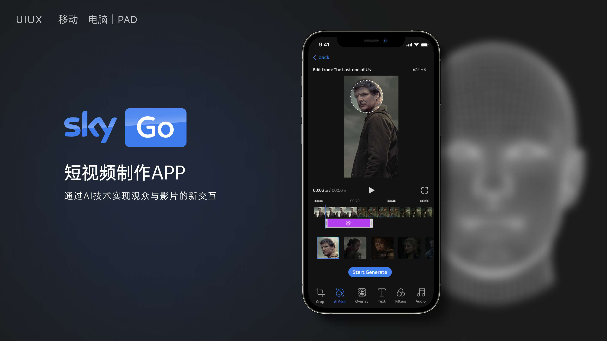
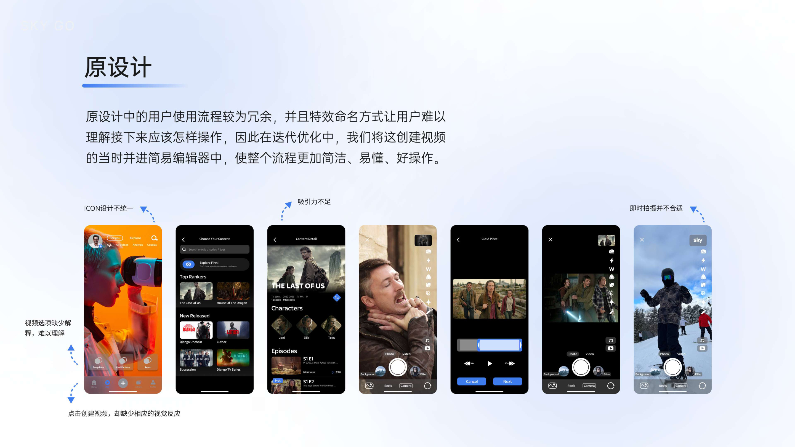
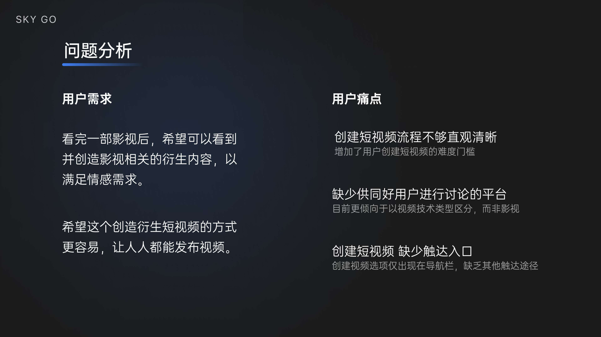
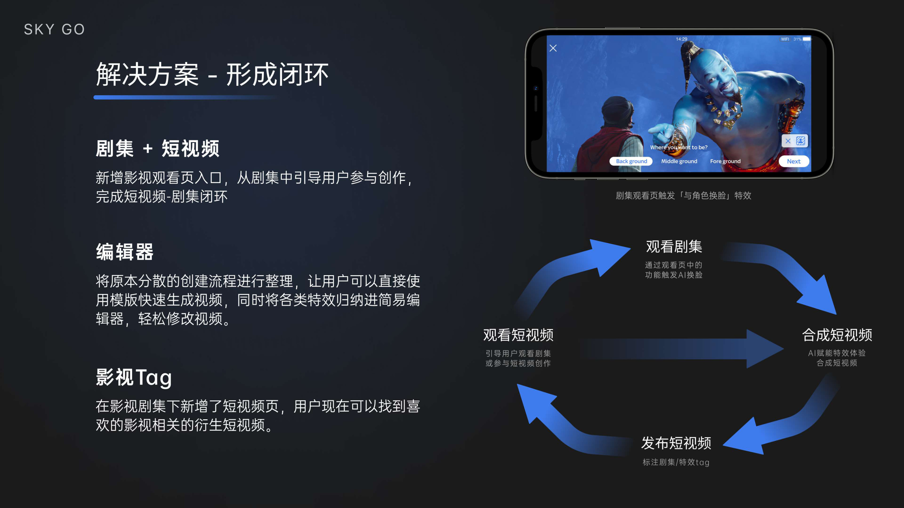
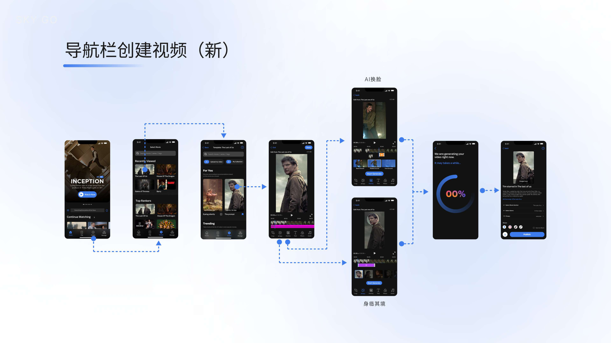

通过AI技术实现观众与影片的新交互，让每个人都能轻松创作基于SKY影视的衍生短视频。
SKY TV是一家英国老牌流媒体公司，主要包括有版权的影视剧集。在已有第一版本的基础上，我基于用户需求进行问题分析与迭代优化，主要优化用户使用流程，以更易用、更好懂为目标。本项目是小组项目，未落地。
看完一部影视后，用户希望可以看到并创造影视相关的衍生内容，以满足情感需求——但现有版本的创建流程不够直观，缺少触达入口，也缺少供同好用户讨论的社区场景。

创建流程冗余，步骤不清晰

特效命名难以理解，吸引力不足

创建视频缺少触达入口
降低短视频创作门槛，在影视内容与用户创作之间形成自然闭环。

以深色背景为基调，蓝色作为主要交互色，强调科技感与沉浸感。在移动、桌面、PAD三端保持视觉语言一致，同时通过层级对比确保信息在暗色环境下的高可读性。